Somewhere around 585 BCE, a solar eclipse crossed the sky above the Greek city-states of Ionia, on the western coast of what is now Turkey. The people who saw it would have been frightened — eclipses were understood, everywhere in the ancient world, as omens, signs of divine anger, portents of disaster. Armies had turned back from battle at the sight of one. Kings had died of fright.
What made this eclipse different was that someone had predicted it.
His name was Thales of Miletus, and according to a tradition preserved by Herodotus, he had announced in advance that the sun would be blotted out in this particular year. We do not know how he did it — his writings, if he had any, are entirely lost, and everything we know of him comes from accounts written centuries after his death. The prediction may be legend. But what is not legend, and what every subsequent generation of Greek thinkers recognised as the starting point of something important, was the idea behind the prediction: that the sky behaves according to regular rules, that those rules can be discovered by observation and reasoning, and that once you know the rules, you can say in advance what will happen.
This is not a mathematical idea, exactly. It is something prior to mathematics: a philosophical commitment to the notion that the world is comprehensible. That it has a structure. That its structure can be found. That finding it, rather than appeasing the gods or consulting the oracle, is the right response to uncertainty.
From that commitment — which the Greeks developed with a peculiar, almost aggressive intensity over the following three centuries — mathematics would never be the same.
Miletus was a prosperous trading city, cosmopolitan in the way that successful ports tend to be. Ionian merchants traded with Babylon, with Egypt, with Persia. Ideas, as well as goods, crossed the water. The mathematical knowledge of the Near East was available, at least in outline, to anyone curious enough to seek it out. Thales almost certainly encountered Babylonian astronomical records, Egyptian geometry, the 3-4-5 rope and the land surveyor’s toolkit.
But something different happened in Miletus. The Babylonian astronomer kept records because accurate records made better predictions, and better predictions served the temple and the palace. The Egyptian surveyor used geometry because it solved the flood’s annual erasure of property boundaries. Both were using mathematical knowledge instrumentally — as a tool for a specific job.
Thales, by the tradition that came down to later Greeks, began asking a different kind of question. Not: what is the area of this field? But: what is area, and why does the formula work? Not: does this right-angle construction produce a square corner? But: why does a triangle with sides 3, 4, and 5 always have a right angle — and is there a deeper reason, a principle that would explain not just this case but every possible right-angled triangle?
The shift sounds subtle. It is actually enormous. It is the difference between a cook who knows which combinations of spices produce a good dish and a chemist who wants to understand why certain molecules taste the way they do. The cook’s knowledge is more immediately useful. The chemist’s knowledge, once developed, is infinitely more powerful — because it is general, because it applies to every possible combination, because it tells you not just what works but why, and therefore lets you predict and design things that have never been tried.
Thales did not fully make this transition — the historical record is too thin for certainty, and scholars are right to be cautious. But the tradition that credited him with being the first to prove geometric theorems, rather than merely apply them, points to something real: a community of thinkers in Miletus and the surrounding Ionian cities who began to treat mathematical facts not as received truths to be used, but as claims to be justified.
Why did this happen in Ionia, at this particular moment? Historians have proposed several explanations, and none is fully satisfying. The trading culture of the Aegean encouraged a kind of argumentative pluralism — merchants from different traditions, with different practices, had to negotiate and justify their positions to one another, developing the habit of reasoned persuasion. The Greek political culture of the emerging city-states, with its public debate and citizen deliberation, may have created a general taste for explicit argument over authority. Perhaps the very fact that the Greeks were relative newcomers to mathematics — inheriting it from older traditions without being trained from childhood to simply accept its procedures — gave them the freedom to ask why.
Whatever the cause, the effect was transformative. Within two hundred years of Thales, Greek mathematicians had built something preserved far more explicitly than in the Babylonian and Egyptian records: a culture of formal proof.
Before we go further, it is worth being precise about what proof means in mathematics, because the word is used loosely in everyday life in ways that can obscure how radical the Greek idea actually was.
In ordinary language, “proof” means strong evidence — the kind of evidence that convinces a reasonable person. A photograph is proof. An eyewitness account is proof. A pattern of behaviour repeated many times is proof. This is probabilistic reasoning: things are proved to a high degree of confidence, but always with the acknowledgement that new evidence could in principle change the picture.
Mathematical proof is categorically different. A mathematical proof is a chain of logical steps, each one following necessarily from the previous ones, starting from statements that are accepted as true without argument (called axioms) and arriving at a conclusion that must be true if the axioms are true. There is no room for “probably” or “in most cases” or “as far as we can tell.” A proved theorem is either correct or the proof contains an error — there is no middle ground.
This means that mathematical truth, once established by proof, is permanent in a way that no other kind of knowledge is. The Pythagorean theorem was proved in ancient Greece. It is still true today. It will be true in ten thousand years. No new archaeological discovery, no advance in technology, no revision of scientific understanding can change it, because it does not depend on any fact about the world — it depends only on the logical relationships between defined concepts. A right-angled triangle necessarily has the property that the square of the hypotenuse equals the sum of the squares of the other sides, in exactly the same way that a bachelor is necessarily unmarried: it is true by definition and logical consequence, not by observation.
In the surviving record, the Greeks are the first to make this central and explicit. Not the mathematics — Babylon and Egypt had substantial mathematics. But the idea that mathematical statements require proof, and that proof means a chain of logical necessity from first principles, is presented by them with unusual clarity. And it changed everything.
The most famous name in early Greek mathematics — famous enough that every schoolchild in the world knows his name attached to a theorem — is Pythagoras of Samos. And Pythagoras is, in many ways, one of the strangest figures in the history of human thought.
He was born on the island of Samos around 570 BCE, and appears to have studied with Thales or within the Milesian tradition. He travelled — possibly to Egypt, possibly to Babylon — and absorbed mathematical knowledge from wherever he could find it. Eventually he settled in the city of Croton, in what is now southern Italy, and founded a community that was simultaneously a philosophical school, a religious brotherhood, and something very close to a cult.
The Pythagoreans lived communally, followed strict dietary rules (they famously refused to eat beans, for reasons that remain genuinely unclear), believed in the transmigration of souls, and organised themselves into an inner circle with secret knowledge and an outer circle of ordinary followers. They attributed all their discoveries to Pythagoras personally, even after his death — which means that distinguishing what the historical Pythagoras actually discovered from what was discovered by his followers over the following century or two is essentially impossible. When ancient sources say “Pythagoras discovered X,” they often mean “the Pythagorean school discovered X, sometime between 570 and 400 BCE.”
But beneath the mysticism and the bean prohibition, the Pythagoreans were engaged in something genuinely important. Their central belief — their motto, according to later tradition — was all is number. By this they meant that the fundamental structure of reality is mathematical: that numbers and their relationships are not merely useful tools for describing the world, but are the actual substance of what the world is made of.
This sounds like mysticism, and partly it was. But it was also, at least in some of its manifestations, an astonishingly productive scientific hypothesis. The Pythagoreans discovered — or at least, first clearly articulated and proved — the relationship between musical harmony and numerical ratios. They noticed that a plucked string produces a note, and that a string half as long produces a note exactly one octave higher. A string two-thirds as long produces the musical fifth. A string three-quarters as long produces the fourth. The fundamental intervals of music — the building blocks of harmony across essentially every culture on earth — turn out to correspond to the simplest ratios of whole numbers: 2:1, 3:2, 4:3.
This is a real discovery. It is not mysticism. The physics of why it is true — why integer ratios of string lengths produce harmonically related frequencies — would not be fully understood until the development of wave mechanics in the eighteenth and nineteenth centuries. But the observation itself is correct, and the Pythagoreans made it by looking at the world carefully and noticing a mathematical pattern.
If music is number, they reasoned, perhaps everything is number. Perhaps the distances of the planets correspond to musical ratios. Perhaps the structure of the cosmos is fundamentally arithmetic. This led them into a great deal of nonsense (the “harmony of the spheres”) and also, more productively, into a deep engagement with the properties of numbers themselves — prime numbers, perfect numbers, the relationships between different kinds of whole numbers — that was the beginning of what would later be called number theory.
And then came the catastrophe.
Take a square. Any square — let us say each side has a length of exactly 1 unit. Draw the diagonal — the line connecting two opposite corners.
How long is that diagonal?
By the Pythagorean theorem: 1² + 1² = diagonal². So 1 + 1 = 2. So the diagonal squared is 2. The diagonal is therefore √2.
Now: what number is √2? The Pythagoreans’ entire philosophical system rested on the assumption that any length could be expressed as a ratio of two whole numbers. This seemed obviously true — after all, any length you can measure with a ruler can be expressed as some number of units and fractions of units, and fractions of units are ratios of whole numbers. The world is made of number, and number means ratios of whole numbers. That was the creed.
So: √2 = some fraction p/q, where p and q are whole numbers with no common factors (we write the fraction in its simplest form). This seems reasonable. It must be true, if the Pythagorean worldview is correct.
And then someone — the tradition credits a man named Hippasus of Metapontum, a Pythagorean of the fifth century BCE — proved that it is false.
The proof is a masterpiece of logic, and it is simple enough to follow completely. Assume that √2 = p/q in lowest terms. Then squaring both sides: 2 = p²/q². Rearranging: p² = 2q². The right side is even (it is 2 times something). So p² is even. But if p² is even, then p itself must be even (because the square of an odd number is always odd). So write p = 2m for some whole number m. Substituting back: (2m)² = 2q², which gives 4m² = 2q², which gives 2m² = q². This means q² is even, so q is even.
But now we have a contradiction. We assumed that p/q is in lowest terms — that p and q share no common factors. But we have just proved that both p and q are even, which means they both have 2 as a factor. A fraction cannot be simultaneously in lowest terms and have both numerator and denominator divisible by 2. The original assumption — that √2 can be written as a fraction p/q — must therefore be false.
√2 is not a ratio of whole numbers. It is not a fraction. It is something else — something the Greeks, with breathtaking appropriateness, called alogos: without a ratio, unutterable, irrational.
This proof is what we now call a reductio ad absurdum — a reduction to absurdity. You assume the opposite of what you want to prove, and then show that the assumption leads to a logical contradiction. Since the logic is sound, the assumption must be wrong. Therefore the thing you wanted to prove must be true.
This style of reasoning — indirect proof, proof by contradiction — is one of the most powerful tools in the mathematician’s arsenal, and it appears here, fully formed, in one of the earliest datable Greek mathematical discoveries. Someone, in the fifth century BCE, sat down and thought: suppose I’m wrong. What would follow? And by following the logic of their own wrongness all the way to a contradiction, they proved themselves right about something their entire philosophical community desperately wanted to be wrong.
The tradition says that Hippasus was killed for this discovery. Thrown into the sea by his fellow Pythagoreans, according to the most dramatic version. Struck down by the gods for revealing a divine secret, according to a more pious version. Expelled from the brotherhood for divulging secret knowledge to outsiders, according to a more restrained version.
Historians are sceptical of the killing. The sources for the story are late — written five or six centuries after the supposed events — and they contradict each other on the crucial details. One ancient writer says Hippasus drowned for revealing the dodecahedron. Another says it was the irrational numbers. A third says he was merely expelled. The legend, as legends do, has clearly grown in the telling.
But the legend, even if it is not literally true, tells us something real about what the discovery felt like. The Pythagorean worldview rested on the premise that all is number, and number means ratio. The existence of √2 — an ordinary, geometrically constructible length, the diagonal of the most basic square, something you can draw with a pencil in two seconds — that was not a ratio, did not merely complicate the Pythagorean picture. It destroyed it. The world, it turned out, contained quantities that their mathematics could not express. The universe was not made of ratios of whole numbers, because here was something real and geometric and undeniable that fell outside that description entirely.
The Pythagoreans found many more irrational numbers quickly. The diagonal of a rectangle with sides 1 and 2 is √5, also irrational. The diagonal of a 1-by-√2 rectangle is √3, irrational. The square root of any number that is not a perfect square is irrational. The irrationals are not exceptions — they are everywhere. Between any two rational numbers, there are infinitely many irrationals. The rational numbers, for all their neat expressibility, are in a precise mathematical sense sparse, scattered thinly through a number line that is overwhelmingly populated by numbers that cannot be written as fractions.
The discovery of the irrational numbers was a crisis. But it was also, as mathematical crises always turn out to be, the beginning of something larger. Numbers had to be rethought. Geometry had to be rethought. And the demand for rigorous proof — for logic so airtight that even uncomfortable truths could not wriggle out of it — became not just a philosophical preference but an urgent practical necessity. If intuition could be so badly wrong about something as simple as √2, then nothing could be trusted that had not been proved.
Enter Euclid.
We know almost nothing about Euclid as a person. He lived in Alexandria around 300 BCE. He taught mathematics there. Some ancient sources give him a reputation for dry wit — when a student complained that geometry was of no practical use, Euclid is said to have told his servant to give the student a coin, “since he must profit from what he learns.” Another anecdote has the Pharaoh Ptolemy I asking if there were a shorter road to geometry than through Euclid’s textbook, and Euclid replying that “there is no royal road to geometry.”
These stories may be apocryphal. What is not apocryphal is the book he wrote: the Elements, thirteen volumes of mathematics that organised, systematised, and in many cases proved from scratch the geometrical and number-theoretical knowledge of the Greek tradition. The Elements is, by reasonable measure, the most successful textbook in human history. For more than two thousand years — from its composition in Alexandria around 300 BCE to the late nineteenth century — it was used to teach mathematics in essentially every literate culture that encountered it. More editions of the Elements have been printed than of any other book except the Bible.
What made the Elements so revolutionary was not its content, though the content is extraordinary. It was its structure.
Euclid begins with definitions: what do we mean by a point, a line, a surface, a circle? He is precise in a way that had never been done before — these definitions are not casual explanations but careful delineations of the objects that geometry talks about. Then he states five postulates — assumptions about the behaviour of geometric objects that he considers self-evident and does not try to prove. Among them: a straight line can be drawn between any two points. All right angles are equal. And, most famously, the parallel postulate: if a straight line crosses two other lines and creates interior angles on one side that sum to less than two right angles, those two lines, if extended, will eventually meet on that side.
From these five postulates, and nothing else, Euclid then proves — in logical order, each theorem following from what came before — 465 propositions covering the geometry of lines, angles, triangles, circles, and three-dimensional shapes, and the arithmetic of whole numbers, including the infinitude of primes and a proof that √2 is irrational.
The achievement is architectural. Euclid constructed a building out of pure logic. The foundations are the axioms — you can accept them or reject them, but you cannot argue with them because they are not claimed as truths about the world, only as the rules of the game. On those foundations, every floor of the building follows necessarily from what came below it. No empirical measurement is needed at any stage. No appeal to intuition. No “it seems obvious that.” Just argument.
This is, in the most literal sense, the invention of rigorous mathematics as a discipline. Not the invention of mathematics — the Babylonians and Egyptians had centuries of sophisticated mathematics before Euclid. But the invention of the form of mathematics as we practice it today: the form of axiom, definition, theorem, proof.
Among the propositions in the Elements, one stands out for its sheer beauty and for the way it illustrates what proof can do that calculation alone cannot.
Proposition IX.20: the prime numbers are infinite in quantity.
This might seem obvious. Of course there are infinitely many primes — how could they run out? But “it seems obvious” is not proof, and there is nothing logically impossible about a universe in which the primes eventually stop. Euclid proved that they do not stop, and his proof is a model of elegant reasoning that mathematicians still cite as one of the finest proofs ever constructed.
Suppose, for contradiction, that there are only finitely many prime numbers. List them all: \(p_1, p_2, p_3, \ldots, p_n\). Now consider the number \(N\), formed by multiplying all the primes together and adding 1:
\[ N = (p_1 \times p_2 \times p_3 \times \dots \times p_n) + 1 \]It can help to see the logic in a concrete example. Suppose, just for illustration, that our supposedly complete list of primes were 2, 3, 5, and 7:

\(N\) is either prime or composite. If it is prime, we have found a prime not on our list — contradiction. If it is composite, it must have a prime factor; among all its factors greater than 1, take the smallest one, and that smallest factor must be prime. But \(N\), when divided by any prime on our list, leaves a remainder of 1 — it is not divisible by any of \(p_1\) through \(p_n\). So its prime factor is also not on our list — contradiction. Either way, our assumption that the list was complete leads to a contradiction. Therefore the primes are infinite.
The proof does not construct the infinitely many primes. It does not find the next prime after the largest known one. It does not give a formula for generating primes. It does something more fundamental: it shows, by pure logic, that any finite list of primes must be incomplete — that the assumption of finitude is self-defeating. The proof is indirect, like the proof of √2’s irrationality, and it is devastating.
This is what the Greek invention of proof makes possible: certainty about infinite things from finite reasoning. You cannot check infinitely many cases. But you can sometimes show that any finite answer to a question contains a contradiction — and that is as good as checking every case, because it rules out the finite answer entirely.
The Greek mathematical tradition did not only prove theorems. It also posed problems — and some of the problems it posed turned out to be extraordinarily difficult, driving mathematical progress for centuries or millennia before they were resolved.
Three problems in particular dominated Greek mathematical ambition: squaring the circle, doubling the cube, and trisecting the angle. Each problem had a strict constraint: it had to be solved using only a compass and an unmarked ruler (a straightedge). No measuring, no marks, no tricks. Just the two most basic instruments of geometric construction.
Squaring the circle: construct a square whose area is exactly equal to that of a given circle. Since the area of a circle involves π, and π turns out to be not just irrational but transcendental (meaning it cannot be the solution of any polynomial equation with rational coefficients), this is actually impossible — but the proof of impossibility would not come until 1882 CE, more than two thousand years after the Greeks posed the problem.
Doubling the cube: given a cube, construct another cube with exactly twice the volume. This requires constructing the cube root of 2, which — like √2 — is irrational, but the impossibility with compass and straightedge alone was not proved until the nineteenth century.
Trisecting the angle: given an arbitrary angle, divide it into three exactly equal parts. Again, impossible with compass and straightedge alone, and again, the proof of impossibility waited until the nineteenth century.
The Greeks could not solve these problems, but they could not prove they were impossible either. They worked on them, invented new techniques in the attempt, and ultimately failed in ways that were completely productive — the mathematics generated by the attempts to solve these problems was rich and important even when the problems themselves remained open.
This is one of the great lessons of mathematical history: some of the most productive work happens on problems that turn out to be unsolvable. The impossibility proofs, when they finally came, required mathematical machinery — Galois theory, transcendence theory — that would not be developed for another two thousand years. The Greeks could not have proved impossibility even if they had suspected it. But by taking the problems seriously, by insisting that solutions had to meet the strict standard of compass-and-straightedge construction, they were setting a standard of rigour that generated real mathematics for two millennia.
Greek mathematics was not a single institution or a single tradition. It was spread across the Greek-speaking world, from Miletus in the east to Syracuse in the west, concentrated in periods of creative ferment that would then pause and be absorbed by the next generation. The Pythagorean school in Croton. The Platonic Academy in Athens. The great institution at Alexandria, where Euclid taught. Each centre had its own character, its own emphases, its own favourite problems.
What unified them — and distinguished them sharply from what came before — was the culture of demonstration. In the Greek mathematical tradition, you could not simply announce a result. You had to prove it. Other mathematicians would read your proof, check each step, argue about whether each inference was valid. Mathematical knowledge was public, argumentative, communal. It was subject to challenge in a way that the secret procedures of a Babylonian scribal school or the professional techniques of an Egyptian harpedonaptos were not.
This culture of public demonstration had a remarkable side effect: it made mathematics accumulative in a new way. The Babylonians accumulated procedures — more and more types of problem, more and more efficient methods. But the Greeks accumulated theorems — proved results that were permanently certain and could be used as building blocks for further proofs without needing to be re-examined. Euclid’s Elements is a demonstration of what this accumulation can produce: two and a half centuries of Greek mathematical work, synthesised into a single logical edifice where each result follows from what came before it.
Once Euclid had proved that the base angles of an isosceles triangle are equal, every subsequent Greek mathematician could use that fact without reproving it. The mathematical community had a shared inheritance of certain truths, growing with each generation, on which new work could build. This is how modern mathematics still works. The mechanism was invented in Greece.
Honesty requires acknowledging what Greek mathematics, for all its glory, was not able to accomplish.
It was almost entirely geometric. The Greek suspicion of irrational numbers — the deep discomfort with √2 and its kin — led them to translate arithmetic problems into geometric ones wherever possible. Algebra, in the sense of symbolic manipulation of unknowns, was not really a Greek invention. They could solve what we would call quadratic equations, but they solved them geometrically, as problems about areas and lengths, not symbolically as problems about numbers. The leap to a general algebraic notation — to variables, to equations written in symbols rather than in geometric diagrams — would come from India and the Islamic world, as we have seen and will see more of.
Greek mathematics was also, with some exceptions, not well adapted to computation. The Elements is not a computational tool. It tells you that √2 is irrational but does not help you calculate its approximate value to ten decimal places. The Greek number notation — using letters of the alphabet — was clumsy for arithmetic. The Babylonians, with their positional base-60 system, could calculate circles around the Greeks when it came to numerical computation.
And the proof culture, for all its power, had a limitation: it moved slowly. Establishing a result by proof takes longer than establishing it by calculation and verification. The Babylonian mathematical tradition, proceeding by recipe and tested procedure, was in some ways more efficient at solving the specific problems it was designed to solve. The Greek tradition, proceeding by proof, was building something larger and slower — an architecture that would, eventually, become the foundation of all subsequent mathematics.
The Greek mathematical tradition effectively ended, as a living creative enterprise, around the third century CE, as the Roman Empire declined and the institutional supports for philosophical and mathematical work — the schools, the libraries, the wealthy patrons — crumbled. The Elements survived. The great works of Archimedes survived. But for the next several centuries, the most important mathematical work was happening elsewhere: in India, where the concept of zero was being formalised and algebra was being born; and eventually on the Malabar coast of Kerala, where a school of mathematicians was pushing into territory that Greek geometry had never reached.
The thread of proof — the idea that mathematics must demonstrate, not merely calculate — would be picked up by the Islamic scholars of the ninth and tenth centuries, transmitted back to Europe in the twelfth and thirteenth centuries, and eventually fused with the algebraic methods coming from India to produce the mathematics of the early modern period. That fusion is the story of the next several chapters.
But the idea — the dangerous, productive, permanent idea that a mathematical claim is not established until it has been proved, that knowing the answer is not enough and you must also know why — is one that the Greek tradition made central. Later Greek tradition traced its beginnings back to Thales. Pythagoras and his school developed it, and discovered the first result that made it genuinely necessary. Euclid systematised it into a form that would anchor mathematical practice for two thousand years.
It is one of the most significant methodological inventions in intellectual history.
In the next chapter, we stay in the Greek world but move east and later in time — to Alexandria, the city that Ptolemy built at the mouth of the Nile, which became for three centuries the intellectual capital of the world. Here, in the greatest library ever assembled, mathematicians turned the Greek tradition of proof toward the heavens and the earth: measuring the circumference of the planet, calculating the distance to the moon, mapping the stars. The question was no longer just: how do we know it is true? The question became: how large is the world?